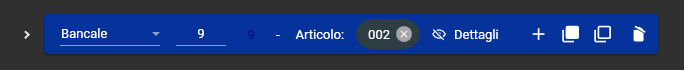

üè≠ Deposito Logistico
Il modulo
Questo modulo è nato dall'esigenza di FreeService di fare picking. Cos'è il picking? E' quando tu invece di gestire il tuo magazzino e la sua giacenza come una semplicissima FIFO, decidi che quando fai uscire degli articoli dal tuo magazzino, fai lo schizzinoso e te li vai a scegliere.
L'utilizzo
Aprendo il modulo se NON è presente un Magazzino (nei POI del pianificatore) il programma chiederà di inserirlo.
Una volta inserito correttamente un magazzino si aprirà la schermata del modulo.
BARRA DI NAVIGAZIONE
Da qui posso:
- Creare una nuova movimentazione (ENTRATA oppure USCITA)
- Generare e gestire una lista Articoli
- Ricercare le movimentazioni
- Controllare le Giacenze
- Configurare le impostazioni del modulo
NUOVA MOVIMENTAZIONE

Da qui posso creare una nuova movimentazione in ENTRATA oppure in USCITA.
Per creare una movimentazione:
- Inserire il Tipo di Movimento ed il Cliente
- Riempire il rettangolo con le informazioni riguardanti il DDT
- Inserire i dati del Mittente (da Mittenti Destinatari)
Ora devo popolare la lista con gli oggetti della movimentazione.
Per farlo devo cliccare con il tasto destro sulla riga di default
(dopo aver selezionato il cliente) ed il programma aprirà la lista prodotti
riferiti al cliente a sinistra della visualizzazione con i bancali.
Per selezionare un articolo devo fare DOPPIO CLICK sulla riga corrispondente nella griglia articoli. Così facendo mi verrà riportato il codice dell'articolo sulla registrazione del bancale.
Ora che ho selezionato l'articolo posso modificarne la quantità, aggiungere i dettagli oppure creare dei discendenti.
Aggiunta dettagli:
Per aggiungere dettagli basta premere sull'icona con l'occhio sbarrato di fianco alla scritta "dettagli". Qui posso specificare il barcode, numero lotto, scadenza lotto e seriale.
Da qui posso anche specificare lo stato della riga di bancali.
- Intero: il bancale è intero
- Rotto: Il bancale è arrivato rotto
- Mancante: non l'ho ricevuto
ATTENZIONE: nel caso in cui avessi più bancali in una stessa riga di cui 1 solo bancale rotto dovrei creare una nuova riga con lo stesso prodotto specificando che SOLO quel bancale è rotto. Il concetto è valido anche per i discendenti
Nell'esempio successivo è mostrata una registrazione di 10 bancali di cui 1 rotto:
Creazione Discendenti:
Per creare un discendente devo premere "+" sulla riga del bancale, così facendo il programa scende di un livello e mi crea una riga Colli. Se premo nuovamente il tasto "+" dalla riga con i colli il programma scende ulteriormente di livello e crea una riga Confezioni.
Nell'esempio precedente è mostrata una registrazione completa
Bottoni:
- Espandi Albero: espande la visualizzazione
- Comprimi Albero: comprime la visualizzazione 
Questo Bottone Permette di configurare i colori degli oggetti presenti nella visualizzazione.
- Crea Riga Sottostante: crea una riga scendendo di un livello
- Duplica Riga: duplica la riga e tutte le righe sottostanti
- Duplica Riga Vuota: duplica solamente la riga selezionata (ignorando le righe sottostanti)
- Cancella Riga: elimina la riga
Salvare una movimentazione:
Una volta compilata la movimentazione e costruito l'albero con gli oggetti della stessa per salvare devo premere uno dei 3 bottoni presenti nella barra in alto.
In questa barra ci sono 4 bottoni:
- Mittenti e Destinatari: apre l'anagrafica dei Mittenti e Destinatari
- Salva Movimento: salva il movimento e rimane sulla schermata
- Salva e Crea Altro: salva il movimento e mi apre una nuova scheda per inserire un nuovo movimento
- Salva e Chiudi: salva il movimento e chiude la schermata di inserimento movimenti
Una volta Salvato posso riaprire il movimento ma se ho creato un uscita le quantità NON si possono più modificare
ARTICOLI
Se premo sul pulsante "**+**" posso aggiungere un articolo all'anagrafica. A destra della lista articoli ho due bottoni, rispettivamente: - Aggiorna - Configurazione Colonne Si possono importare in massa gli Articoli da excel.IMPOSTAZIONI
- Magazzino Predefinito: permette di specificare il magazzino predefinito per le operazioni. Se premo su Ibrido ogni volta che inserisco una movimentazione devo scegliere il magazzino.
GRIGLIE VISUALIZZAZIONE
In queste griglie si possono vedere i movimenti in **ENTRATA** ed in **USCITA**. Se ho l'impostazione attiva qui posso vedere anche la griglia con i movimenti temporanei ATTENZIONE: i totali presenti nelle griglie **NON sono giacenze** ma sono solamente dei contatori di bancali, colli e prodotti presenti nella visualizzazione. Le quantità di prodotti si possono modificare finché non creo un uscita dal deposito. Per creare un uscita dalla ricerca basta selezionare un movimento e dalla lista che si apre con il tasto destro seleziono l'opzione `Crea Uscita`.CREA USCITA
Per creare un uscita a differenza di un entrata devo riportare il **Destinatario Commerciale** e la **Destinazione Merce** per la creazione del DDT.Fatturazione Magazzino
Finalmente viene scritto qualcosa di questa famosa fatturazione magazzino che è sembra essere aramaico antico. Ora spiego quel poco che ho capito fin ora, avverto che questa guida va aggiornata.Cominciamo
I listini del magazzino sono raggiungibili aprendo i listini e premendo questo bottone in alto a sinistra: Una volta aperti appaiono così e ci sono 4 sezioni differenti: Listini, Servizi Accessori, Servizi Fissi e Giacenza Fine Mese.
Listini
I listini sono impostabili per singolo articolo o per tutti e servono per calcolare la giacenza **moltiplicata per il numero dei giorni giacenti**. Possono essere gestiti i giorni di franchigia, possono anche essere divisi per metà mese o per settimana ma non ho ancora capito a cosa serva.Servizi Accessori
I servizi accessori servono per gestire i costi di entrata e uscita dei bancali, colli, confezioni o pezzi (selezionabili tramite il campo UM) possono avere fasce o essere fissi. ATTENZIONE: non possono essere divisi per articolo, sono generali e interessano la quantità totale dei bancaliServizi Fissi e Giacenza Fine mese
I servizi fissi sono quelli più stupidi del mondo perché sarebbero i servizi fissi mensili e vanno a sostituire la Giacenza Fine Mese in determinati casi. Mi spiego meglio: la giacenza a fine mese serve per fare quello che il nome suggerisce ma funziona solo se vengono flaggati i flag "Giacenza" e poi "Entrata" o "Uscita". Questo perché, nell'esempio dell'entrata, quando vado a creare una conferma che ha una riga di prezzo per ogni entrata con quantità che indica il numero dei bancali o qualunque UM specificata. ATTENZIONE: nella Giacenza Fine Mese non funzionano le fasce e ho visto che nella modifica 2368, quando è stata richiesta questa modifica, per qualche motivo, è stato ben pensato di non gestirla in questa modalità ma di farlo invece nei Servizi Fissi. Non ho la minima idea del perché anche perché quelli fissi non sono divisibili per codice articolo ma solo per UM. Questa cosa va sistemata con tempo in futuro perché ha ben poco senso.Le tabelle
Le tabelle sono tutte sotto lo schema [dep] e sono le seguenti, gestite in una maniera specifica. Trovate il diagramma nella mia cartella personale.